Tecnologia, agilidade e atendimento humanizado para conectar pessoas no dia a dia.
História → Valores → Normas → Prática
HojeIntegração
0Anos de História
História & Cultura
Propósito e Valores
Normas & Benefícios
Trilha Completa
25 Anos de História
Conexões Humanas
Bem-vindo à equipe
ATEKY
Módulo 01 · Integração
Módulo 01 · Integração
Conheça a Ateky por dentro
APRENDA A CULTURA ATEKY · INTEGRAÇÃO
Conheça a Ateky e faça parte dessa história.
Uma jornada para conhecer nossa história, nossos valores e o jeito humano de criar conexões com as pessoas.
História → Valores → Pertencimento
seja bem vindo!
Nossa história (linha do tempo)
2000/2009 – A Ateky iniciou suas atividades como uma loja de equipamentos de informática e materiais de escritório.
2010/2013 – Em agosto de 2010, a loja expandiu seus serviços, oferecendo acesso à internet via rádio nas cidades de São Ludgero e Tubarão. Nos anos seguintes, a cobertura foi ampliada para municípios vizinhos.
2014 – Percebendo a necessidade de inovação, em 2014 a Ateky Internet iniciou a instalação de internet por fibra óptica, trazendo maior velocidade e qualidade de conexão aos seus clientes.
2023 - Percebendo o crescimento da empresa e nossos novos objetivos, iniciamos a jornada no Paraná.
Em 2025 completamos 25 anos de marca, um feito que consolida a nossa força.
Significado do nome
Nossa história (vídeo)
INAUGURAÇÃO DO ESPAÇO NOVO
FEITOS DE CONEXÕES HUMANAS
Organograma Hierárquico
Apresentação · Normas, Cultura e BenefíciosSlide 1 de 43
Cultura, Ética e Conduta
1. O QUE É CÓDIGO DE ÉTICA E CONDUTA
O Código de Ética e Conduta é um guia que estabelece normas de comportamento e interações aceitáveis dentro da organização. Ele busca garantir que todas as atividades da Ateky sejam realizadas com integridade e transparência.
ABRANGÊNCIA: Este documento abrange a todos os colaboradores da Ateky Internet.
Cultura, Ética e Conduta
2. Negócio, Missão e Visão
2. Nosso NEGÓCIO é proporcionar experiências incríveis, através de conexões.
2.1 Tendo a MISSÃO de conectar pessoas com excelência através da tecnologia e inovação, oferecendo sempre um atendimento humanizado, acolhedor e ágil.
2.2 Sempre VISANDO alcançar novas conexões, preservando nossos valores.
Cultura, Ética e Conduta
2.3 Valores: nossas práticas
Ética e Honestidade: Ser verdadeiro, correto e justo.
Empatia: Se importar e tratar todas as pessoas com respeito e gentileza.
Comprometimento: Ser ágil e estar comprometido em ajudar e atender a solicitação do cliente.
Resolutividade: Eliminar burocracias e facilitar a vida das pessoas para que o cliente possa fazer o que mais ama.
Cultura, Ética e Conduta
2.4 Os 4 pilares da ateky
PESSOAS · HONESTIDADE · CRESCIMENTO · INOVAÇÃO
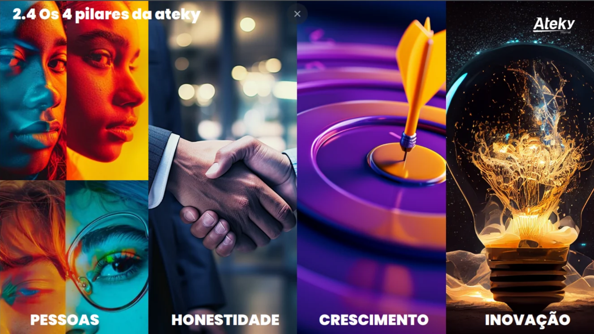
Cultura, Ética e Conduta
3.0 PLANO DE CARREIRA
Junior → Pleno→ Sênior
Cada etapa detém novos desafios
aumenta a sua responsabilidade e conhecimento
aumento salariais em cada nível e troca de cargo
4. REMUNERAÇÃO E BENEFÍCIOS
4.1 Salário
A Ateky Internet efetua o pagamento da remuneração até o quinto dia útil do mês subsequente, garantindo que todos os colaboradores recebam com os devidos descontos legais. O 13º salário é pago em duas parcelas, sendo a primeira até 30 de novembro e a segunda até 20 de dezembro de cada ano, proporcionalmente ao período de trabalho.
4. REMUNERAÇÃO E BENEFÍCIOS
4.2 Férias
Os colaboradores têm direito a 30 dias de férias após 12 meses de trabalho, a serem comunicadas pelo DP com 30 dias de antecedência.
O início das férias deve ocorrer respeitando as normas da empresa, garantindo a continuidade das atividades e o bem-estar do colaborador.
As faltas injustificadas durante o período aquisitivo são somadas e consideradas para a apuração da quantidade de dias efetivos de férias, conforme a tabela abaixo: - Até 5 faltas: 30 dias de férias - De 6 a 14 faltas: 24 dias de férias - De 15 a 23 faltas: 18 dias de férias - De 24 a 32 faltas: 12 dias de férias - Mais de 32 faltas: perda total do direito às férias.
4. REMUNERAÇÃO E BENEFÍCIOS
4.3 Licenças
Desde que devidamente comunicadas e comprovadas, a Ateky Internet concede ao colaborador licenças por motivo de:
3 dias consecutivos, em caso de falecimento de cônjuge ou companheiro(a), ascendente, descendente, irmão ou pessoa declarada em sua CTPS, viva sob sua responsabilidade;
5 dias úteis, em virtude de casamento civil;
Por 1 dia, em cada 12 meses de trabalho, em caso de doação de sangue, devidamente comprovada;
Para o Pai por 5 dias, em caso de nascimento de filho no decorrer da primeira semana. Para o caso de pai adotante, será concedido o mesmo benefício constante desta cláusula, desde que a adoção seja de criança até 60 dias de vida;
No período de tempo em que tiver de cumprir as exigências do serviço militar;
Por 2 (dois) dias em caso de internação hospitalar do esposo(a), companheiro(a) ou filho(a) de até 14 anos;
Por 1 dia para o recebimento do PIS/PASEP, desde que o respectivo pagamento não se efetue pela empresa ou posto bancário nela localizado;
Para o Pai por até 2 (dois) dias para acompanhar consultas médicas e exames complementares durante o período de gravidez de sua esposa ou companheira, conforme o inciso 10 do art. 473 CLT.
Licença maternidade serão concedidos 120 dias de afastamento a partir do atestado do médico obstetra ou então a partir do nascimento
4. REMUNERAÇÃO E BENEFÍCIOS
4.4 Jornada de trabalho
A empresa tem jornada de trabalho de 8 horas diárias, 44 horas semanais, 220 horas mensais, respeitando os intervalos previstos e os descansos estabelecidos por lei. - Podendo, de acordo com a necessidade da empresa entrar na escala de atendimento.
4. REMUNERAÇÃO E BENEFÍCIOS
4.5 PRÊMIO ASSIDUIDADE
O Prêmio Assiduidade é um benefício de R$ 250,00, destinado aos colaboradores CLT sujeitos ao controle de jornada, com o objetivo de incentivar a pontualidade, o comprometimento e a disciplina.
Período de apuração: do dia 21 ao dia 20 do mês seguinte, com pagamento no primeiro dia útil do mês subsequente.
Novos colaboradores: direito ao prêmio após 30 dias trabalhados.
Atrasos: tolerância de até 3 atrasos de, no máximo, 5 minutos cada.
Advertências: 1 advertência reduz o prêmio em 50%; 2 ou mais advertências ou suspensão disciplinar ocasionam a perda total.
Faltas e afastamentos: ocasionam a perda do prêmio, exceto afastamento por acidente de trabalho de até 3 dias.
Exceções: compensações por banco de horas dependem de autorização prévia da empresa.
Importante: o recebimento do prêmio depende do cumprimento das regras durante todo o período de apuração.
4. REMUNERAÇÃO E BENEFÍCIOS
4.6 salário família
A empresa se compromete a pagar o salário família a todos os funcionários que fizerem jus ao benefício, mediante a apresentação da certidão de nascimento, carteira de vacinação e comprovante de escolaridade de cada filho do colaborador, que devem ser entregues na admissão e renovados nos meses de maio e novembro de cada ano.
Em caso de não entrega dos documentos o colaborador perderá o benefício.
Registro, Ponto e Jornada
5. Registro
Ao ser admitido na Ateky Internet, todo colaborador deverá preencher os questionários fornecidos pela empresa, além de prestar, com exatidão e sob sua responsabilidade, as informações que forem solicitadas.
Quanto a documentação do colaborador, em atendimento a Lei Geral de Proteção de Dados (LGPD) somente será solicitado os documentos exigidos por lei, que, portanto, são essenciais para a formalização do contrato de trabalho e do registro do colaborador, além daqueles que se fizerem necessários.
Todavia, caso haja necessidade da coleta de dados sensíveis ou dados de terceiros estranhos à relação de trabalho (cônjuge, filhos menores, etc), o colaborador e/ou o titular dos dados estarão cientes acerca da necessidade de tais documentos e da forma como esses dados serão tratados. O colaborador poderá fornecer o seu consentimento de forma livre, inequívoca e informada.
Como regra geral, no ato da contratação o colaborador deverá apresentar ao setor de Departamento pessoal cópia dos documentos solicitados
Registro, Ponto e Jornada
6. Registro de ponto
O registro de ponto é feito através de biometria, utilizando um sistema eletrônico validado pelo Inmetro, garantindo que a jornada de trabalho seja devidamente documentada e acompanhada.
É uma responsabilidade individual registrar corretamente as entradas, saídas para almoço e retornos, evitando penalizações por falhas no registro.
Registro, Ponto e Jornada
6.1 Faltas e Atrasos
Faltas e atrasos, quando não justificados, impactam diretamente na remuneração dos colaboradores, resultando em descontos salariais. Conforme o artigo 71 da CLT, espera-se que os colaboradores cumpram rigorosamente os horários estipulados para evitar essas penalizações e manter a produtividade da equipe.
É necessário respeitar os horários e manter pontualidade.
Registro, Ponto e Jornada
6.2 Intervalos
- Serão disponibilizados 5 minutos para café no período da manhã, à partir das 09:00.
- Horário de almoço é de 1 hora e 30 minutos, iniciando conforme sua jornada de trabalho.
- No período da tarde, serão disponibilizados 10 minutos, à partir das 15:00.
Registro, Ponto e Jornada
6.3 Alguns pontos de extrema atenção os quais devem ser prevenidos
De acordo com o artigo 71 da clt, o colaborador não deve realizar menos do que 01:00 de almoço;
O intervalo de almoço deve ser realizado no máximo até a sexta hora trabalhada;
Nunca descumprir a interjornada, intervalo mínimo entre uma jornada e outra de trabalho, que deverá ser de no minino 11 horas;
Não exceder o limite diário de extras, no máximo 02:00, que serão pagas na folha de pagamento do mês subsequente;
Não ultrapassar o limite diário de jornada, sendo de 10:00 diárias;
Não podem trabalhar por 7 dias direto sem o devido descanso.
Ajuste de ponto: Solicitar preenchendo formulário de justificativa; departamento pessoal avaliará.
Descontos: Atrasos, saídas antecipadas e faltas sem justificativa serão descontados.
Comunicação: Informar o gestor não garante abono ou banco de horas.
Horas Extras: Com autorização do gestor, horas a mais podem compensar atrasos e faltas; saldo positivo é pago como hora extra.
Autorização Prévia: Saídas antecipadas ou faltas precisam de autorização e não garantem abono.
Normas, Conduta e Ambiente
7. USO DE EQUIPAMENTOS DE PROTEÇÃO:
Ateky é uma empresa comprometida com a segurança e a integridade física dos seus colaboradores, por isso, proporciona a todos aqueles que exercem atividades externas ou internas e que exigem a utilização dos equipamentos de proteção, de acordo com os cargos e as respectivas funções, os treinamentos e capacitações necessários quanto a forma correta e a importância do uso destes equipamentos.
Além de que a empresa exerce fiscalização rigorosa quanto a utilização correta de todos os equipamentos de proteção que são fornecidos aos colaboradores, e no caso do descumprimento dessa regra poderá resultar em medidas disciplinares e responsabilização por eventuais danos ao equipamento.
Normas, Conduta e Ambiente
7.2 Preservação de instalações, materiais e equipamentos:
É de extrema importância que o colaborador tenha zelo e cuidado com todos os equipamentos que a empresa lhe confiar, tais como: instalações, veículos, máquinas, ferramentas ou quaisquer outros itens.
Avaria ou falta de cuidado em aparelhos, como derramar água/café no notebook ou qualquer outro item podem ser descontados do colaborador, por isso, cuidem como se fosse seu!
No caso de qualquer anormalidade constatada o colaborador deverá informar imediatamente o setor responsável.
Não é permitida a saída de colaboradores com qualquer tipo de equipamento, máquinas, ferramentas e documentos sem autorização prévia.
Devemos zelar pela limpeza e segurança dos equipamentos e senhas
Não devemos colar vários adesivos ou post it pela mesa ou notebook. Ter somente anotações realmente importantes em seu campo de visão.
Normas, Conduta e Ambiente
8. Sigilo das informações
Todas as informações confiadas ao colaborador durante a execução de suas tarefas e que forem julgadas e declaradas sigilosas pela empresa devem ser preservadas, não revelando-as, nem direta ou indiretamente a terceiros. A quebra de qualquer sigilo da empresa estará sujeita as penalidades previstas em lei.
Normas, Conduta e Ambiente
8.1 Sugestões
Todo colaborador pode e deve sugerir medidas para maior eficiência do serviço e para o desenvolvimento da empresa, reportando-se ao setor responsável ou ao seu superior imediato. Da mesma forma como toda queixa e/ou observação sobre qualquer assunto também deve ser feita ao setor responsável ou ao seu superior hierárquico.
Sendo que reclamações de cunho pessoal não devem ser tratadas em ambientes públicos, como redes sociais ou grupos de whatsapp. Isso permite tratar cada caso com a devida atenção e confidencialidade, garantindo uma solução mais rápida e eficaz.
Normas, Conduta e Ambiente
9. Normas da empresa
É importante que todo colaborador respeite as normas da empresa. A Ateky preza pelo coletivo, dessa forma todos devem manter um comportamento adequado com o seu local de trabalho e com os compromissos assumidos no ato da contratação, sempre com o zelo, disciplina, espírito de colaboração, atenção e competência profissional.
Todas as ordens e instruções repassadas pelo superior hierárquico de cada colaborador devem ser acatadas com presteza e consideração, uma vez que no caso de desobediência, indisciplina, insubordinação e desídia no desempenho da sua função, o colaborador estará sujeito à penalidades previstas em lei, tais como: advertência, suspensão e demissão por justa causa.
Direito de Recusa: Nenhum colaborador é obrigado a cumprir ordens que sejam absurdas, ilegais ou que violem os princípios éticos da empresa.
Procedimento em Caso de Ordem Inadequada: Caso receba uma ordem que considere absurda ou ilegal, o colaborador não deve executar a ordem.
Comunique imediatamente o ocorrido ao seu superior hierárquico ou ao departamento de Recursos Humanos.
Registrar por escrito a ordem recebida e os motivos pelos quais a considera inadequada através do e-mail reclamacao@ateky.com.br.
Normas, Conduta e Ambiente
9.1 Conduta esperada
O colaborador deve manter tanto em sua vida privada, quanto profissional conduta compatível com a dignidade do cargo ocupado e com a reputação do quadro de pessoal da empresa.
A Ateky preza pelo respeito mútuo entre todos os envolvidos nesta relação de trabalho, por isso, recomenda-se a todos o desenvolvimento de empatia, solidariedade e espirito de colaboração. Jamais faça algo ao seu colega de trabalho, que não gostaria que fizessem com você .
Normas, Conduta e Ambiente
9.2 Apresentação pessoal
O colaborador representa a imagem da empresa perante os seus clientes, fornecedores e demais pessoas com as quais mantém relacionamento profissional. Por isso é de fundamental importância usar corretamente o uniforme ou a vestimenta fornecida ou recomendada pela empresa em condições normais de higiene e aparência.
Da mesma forma são importantes os cuidados com a imagem pessoal de cada colaborador, tais como: cabelo, barba, unha e maquiagem, que devem sempre estar alinhados e de acordo com a função exercida.
Normas, Conduta e Ambiente
9.3 Uniformes
É obrigatório o uso do uniforme em todos os dias da jornada de trabalho de acordo com a padronização de cada setor, sendo proibida a sua utilização fora do horário de expediente. Em eventos que o colaborador estiver representando a Ateky(palestras ou treinamentos) e houver registro de ponto, se torna obrigatório o uso do uniforme. Exceções serão comunicadas. Nas redes sociais, é permitido postar fotos/vídeos com o uniforme quando for de cunho profissional, representando a empresa, enaltecendo seu papel. Porém, casos onde for postado utilizando uniforme em vídeos de dancinha ou vlog da vida pessoal serão proibidos. Nos casos que forem constatados a pessoa será advertida conforme previsto neste manual.
Da mesma forma como é de responsabilidade exclusiva do colaborador o uso correto e a devida manutenção e zelo do uniforme que lhe foi confiado, os quais devem estar sempre limpos, passados e no caso das botas, devidamente limpas. Em caso de roubo, extravio ou danos e desgastes, o departamento responsável deve ser imediatamente comunicado. As peças danificadas ou manchadas devem ser devolvidas para que a devida substituição ocorra. Em caso de desligamento, o colaborador deverá entregar todos os uniformes no ato do desligamento da empresa.
Normas, Conduta e Ambiente
9.4 Uniformes dos colaboradores internos:
Apesar da empresa não fornecer a parte de baixo da vestimenta, em função do padrão de atendimento ao público e aos princípios e valores por ela defendidos, é recomendado a todos os colaboradores internos que procurem usar roupas compatíveis com o ambiente de trabalho.
Vestimenta padrão:
Para homens: Calça ou bermuda jeans sem rasgos ou de alfaiataria.
Para mulheres: Calça ou bermuda jeans sem rasgos, de alfaiataria ou saias abaixo do joelho, sem fendas ou rasgos.
Para pontos de atendimento: É obrigatório o uso do uniforme completo (camisa/camiseta, calça fornecida pela empresa, calçado fechado);
Para técnicos externos: É obrigatório o uso de uniforme completo fornecido pela empresa no ato da contratação;
Para grávidas: É permitido o uso de vestidos abaixo do joelho, sem fendas, rasgos ou decotes, podendo ser modelos de regata básica, manga curta ou manga longa. Também é permitido o uso de leggings, desde que combinadas com camisas alongadas. O uso do uniforme poderá ser flexibilizado para gestantes sempre que não houver adequação de tamanho ou modelagem que atenda às suas necessidades durante a gestação.
Os seguintes itens são proibidos:
Leggings e calças moletom;
Chinelos ou calçados sem fechos no calcanhar;
Roupas curtas/decotadas/rasgadas;
Bonés, gorros, toucas, lenços ou qualquer tipo de acessórios semelhantes;
Óculos escuro.
Normas, Conduta e Ambiente
9.5 Frota
A utilização de veículos da empresa está condicionada à execução de serviços, portanto, não é permitido usar os veículos para viagens particulares. Os custos relativos ao uso indevido de veículos da empresa poderão ser descontados no pagamento do salário do colaborador responsável.
O colaborador será responsável por quaisquer danos e depreciações no veículo que lhe for confiado, nos casos em que comprovadamente agir com dolo ou culpa, de acordo com termo de responsabilidade assinado no ato de entrega.
Toda e qualquer infração de trânsito cometida pelo colaborador com o veículo da empresa será de sua responsabilidade, cabendo a ele, de imediato, preencher formulário de identificação do condutor infrator, responsabilizando-se pela infração e, consequentemente, assumindo a pontuação em sua CNH, bem como o pagamento da multa pecuniária aplicada.
É obrigatório a realização de Check List semanalmente para diagnóstico e inspeção de avarias e manutenções preventivas.
Normas, Conduta e Ambiente
9.5.1 Frota
Além disso, os seguintes procedimentos deverão ser seguidos:
Agendamento: O agendamento do veículo deve ser feito com antecedência apenas com o supervisor de agendamento. Não será permitido utilizar o veículo sem agendamento prévio.
Devolução do veículo: Ao chegar de volta à empresa, o veículo deve ser guardado na garagem e a chave entregue ao responsável pelo agendamento.
Abastecimento: Caso seja necessário abastecer o veículo, o colaborador deve seguir os seguintes passos:
Tirar uma foto do painel do carro antes de abastecer, mostrando a quilometragem.
Tirar uma foto da placa do veículo.
Tirar uma foto da notinha fiscal do abastecimento.
Normas, Conduta e Ambiente
9.6 Onde estacionar os veiculos particulares
Recomenda-se não estacionar carros e motos em frente ao lado das lojas Ateky. Esses espaços são únicos e exclusivos para os clientes. Prezamos sempre pela empatia, por isso, pense no próximo sempre, é parte da cultura da Ateky.
Normas, Conduta e Ambiente
10 Conservação do ambiente
Além da apresentação pessoal, é fundamental que o ambiente de trabalho também seja adequado. Dessa forma, é responsabilidade do colaborador zelar pela organização do seu respectivo local de trabalho, bem como nas demais dependências da empresa.
Se pegou algo, devolva à mesma pessoa.
Se usou algum objeto, coloque no mesmo lugar.
Se sujou, limpe.
Normas, Conduta e Ambiente
10.1 Lanche na mesa
É proibido consumir alimentos, frutas, balas e chicletes e afins na mesa de trabalho. O lanche sempre deve ser feito no refeitório dentro do período permitido. Abrir embalagens de comida ou latas na mesa é proíbido. Latas em cima da mesa não são permitidas.
Normas, Conduta e Ambiente
10.2 Comércio
Não é permitido nenhuma compra e/ou venda de roupas, alimentos, sapatos, jóias, cosméticos ou qualquer tipo de produto ou serviço, bem como promover empréstimo de dinheiro nas dependências da empresa.
Normas, Conduta e Ambiente
10.3 Fumantes
Se você é fumante, lembre-se de que nem todas as pessoas ao seu redor sentem-se à vontade com esta situação. Por isso, não é permitido fumar em ambientes internos da empresa, veículos a serviço da Ateky e na residência, no estabelecimento comercial do cliente. Em frente a Ateky também não é permitido.
Normas, Conduta e Ambiente
10.4 Bebidas alcoólicas
É proibido o consumo de álcool no ambiente de trabalho ou em horários próximos ao início da jornada.
Normas, Conduta e Ambiente
11. Câmeras de segurança
Para maior segurança da empresa e de seus colaboradores, informamos que a empresa conta com um sistema de monitoramento de câmeras de segurança em todo o ambiente interno e externo, exceto em locais privativos, como banheiros. Além da captura de imagens, as câmeras também gravam áudio, sendo ambas as formas de registro utilizadas exclusivamente para fins de segurança, em conformidade com a legislação vigente e o termo assinado na contratação.
Normas, Conduta e Ambiente
12.1 Aparelho celular corporativo
Para colaboradores com direito a aparelho celular corporativo, cabe a responsabilidade de fazer o uso adequado do aparelho, com os devidos cuidados, zelo e responsabilidades de acordo em conformidade com o termo de recebimento de aparelho celular corporativo.
Normas, Conduta e Ambiente
12.2 Aparelho celular particular
Embora não seja proibido o uso de aparelho celular particular durante o horário de trabalho, a empresa recomenda que essa utilização ocorra de modo responsável e coerente, não podendo interferir no desempenho das atividades do colaborador.
Normas, Conduta e Ambiente
12.3 Assistir vídeos
Não é permitido acessar vídeos de youtube ou quaisquer outros em seu computador de trabalho. A empresa não proíbe ouvir música de youtube e das plataformas, mas qualquer conteúdo que não seja relacionado ao seu trabalho é proibido.
Desenvolvimento, Segurança e Encerramento
14. Palestras e treinamentos
Com intuito de melhor capacitar e orientar seus colaboradores a Ateky conta com parceiros para palestras e treinamentos mensais, também como treinamentos técnicos de segurança e capacitação com a plataforma da empresa, além de palestras organizacionais e motivacionais. Com isso é de total importância a participação de todos os colaboradores nos horários e datas estipuladas. A participação ativa contribui para o desenvolvimento individual e coletivo, além de alinhar os objetivos da empresa com as práticas mais atualizadas. O não comparecimento ou atrasos constantes podem comprometer o aproveitamento das oportunidades oferecidas, por isso, a presença de todos é altamente valorizada.
Desenvolvimento, Segurança e Encerramento
15. Penalidades
O colaborador que deixar de cumprir com todas as obrigações contidas neste manual estará sujeito as seguintes penalidades:
Advertência verbal: aviso verbal, não podendo ser dado na frente de outros colaboradores;
Advertência escrita: Documento com o feedback descrito, necessário assinatura;
Suspensão: o empregador suspende o funcionário por até 30 dias;
Demissão: o colaborador pode ser dispensado por justa causa, nos casos em que ficar comprovado a ocorrência de falta grave ou descumprimento das obrigações decorrentes do contrato de trabalho e do presente regulamento interno;
Desenvolvimento, Segurança e Encerramento
16. ACIDENTES, QUASE-ACIDENTES E POTENCIAL DE RISCO.
Todo colaborador deve comunicar imediatamente todo e qualquer acidente, quase-acidente ou potencial de risco que observar ao setor responsável, independente do potencial de gravidade.
Acidente: considera-se qualquer evento que resulte em lesão.
Quase acidente: evento sem lesão com potencial de trazer risco a vida ou integridade física de qualquer pessoa.
Potencial de risco: situação que pode ocasionar acidente.
Desenvolvimento, Segurança e Encerramento
16.1 Primeiros socorros
Em caso de acidentes a primeira providência a ser tomada é o socorro à vítima. Porém, caso o colaborador não tenha participado de treinamento em primeiros socorros, recomenda-se a convocação de quem esteja treinado.
Todo acidente deve ser imediatamente informado ao setor responsável da empresa, a fim de que os procedimentos de investigação da sua causa sejam iniciados imediatamente.
Desenvolvimento, Segurança e Encerramento
HISTÓRIAS CATIVANTES
É um projeto que nasceu para ajudar pessoas, com foco no cliente que possa estar passando por necessidades, principalmente de saúde, financeira ou emocional.
Vocês podem receber histórias assim através de ligação, whatsapp ou até presencialmente.
A empresa valida o caso e busca ajudar, seja de forma paleativa ou então definitiva (se for possível), mostrando o lado humanizado e sensibilizado que a empresa preza em ter para com o cliente.
Desenvolvimento, Segurança e Encerramento
Boa jornada!
Boa jornada!
Use as setas ← → ou arraste o slide com o mouse para avançar
Etapa final · sua evolução importa
Prova de Integração
Escaneie o QR code para responder à prova. Suas respostas nos ajudam a entender o que ficou claro e onde ainda podemos trabalhar juntos.
Módulo 02 · Atendimento ao cliente
Atender é criar conexão
APRENDA A CONECTAR · ATENDIMENTO
Quem acolhe bem, conduz à solução certa.
Pratique a escuta, a empatia e uma comunicação clara para transformar cada contato em uma boa experiência.
Escuta → Empatia → Clareza → Solução
Apresentação · Atendimento ao clienteSlide 1 de 31
Atendimento ao cliente · Módulo 1
1. Atendimento ao cliente · Mód. 1
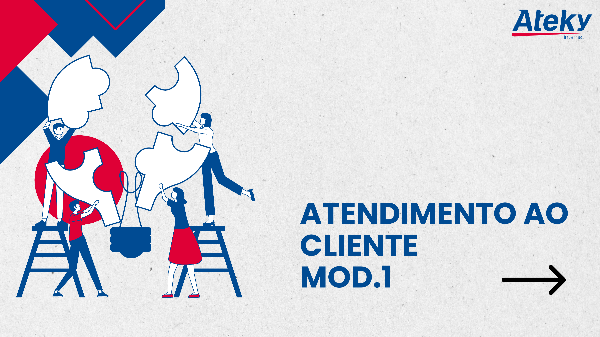
Atendimento ao cliente · Módulo 1
2. O que é Atendimento na sua opinião?
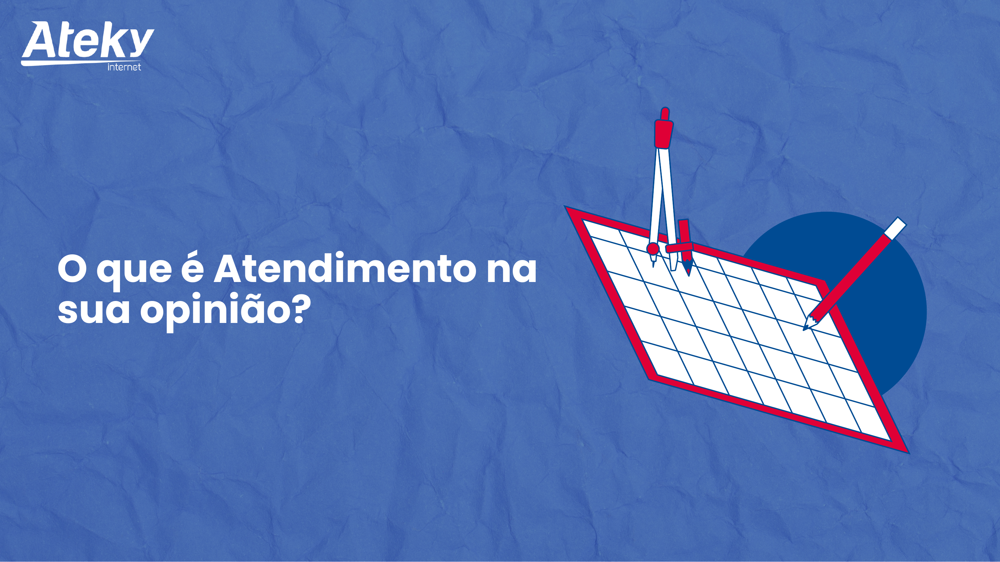
Atendimento ao cliente · Módulo 1
3. O que é atender
É o ato de cuidar e prestar atenção às pessoas que nos procuram.
É muito mais do que apenas responder a solicitações: é oferecer atenção genuína e solucionar necessidades.
Atendimento ao cliente · Módulo 1
4. O que preciso ter/desenvolver em meus atendimentos?
O QUE PRECISO TER/DESENVOLVER EM MEUS ATENDIMENTOS?
Atendimento ao cliente · Módulo 1
5. Responsabilidade, Competência e Adaptabilidade
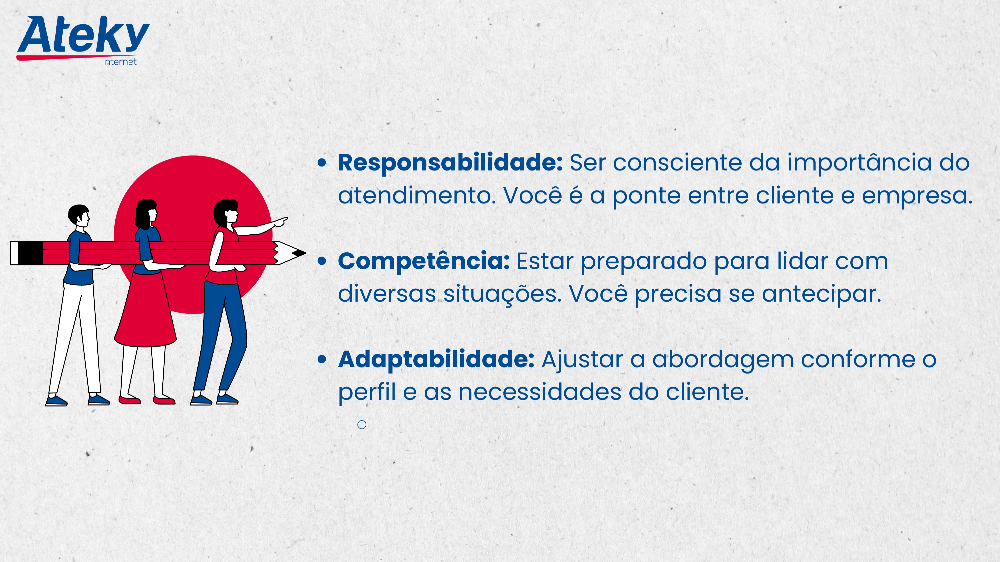
Atendimento ao cliente · Módulo 1
6. Roteiro de Atendimento
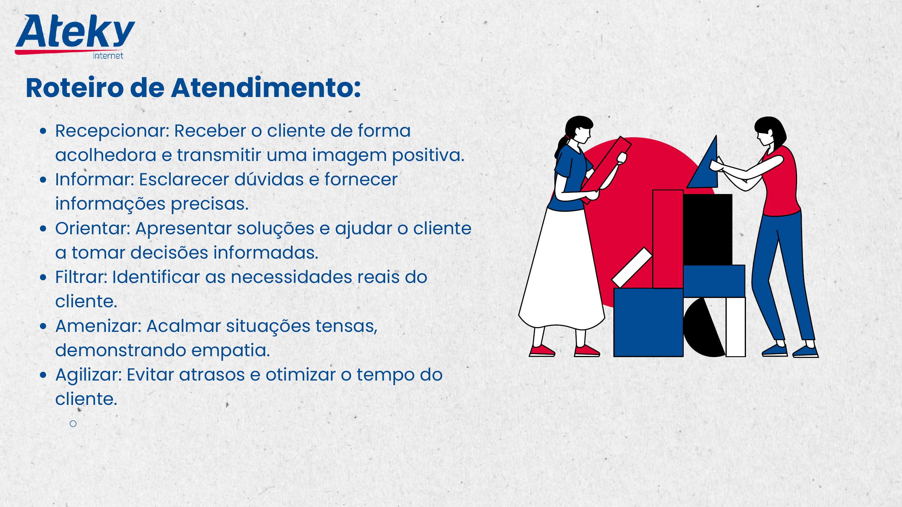
Atendimento ao cliente · Módulo 1
7. Como Realizar um Atendimento de Qualidade?
Atendimento ao cliente · Módulo 1
8. Encerramento do Atendimento
Atendimento ao cliente · Módulo 1
9. Técnicas para um Atendimento Excelente
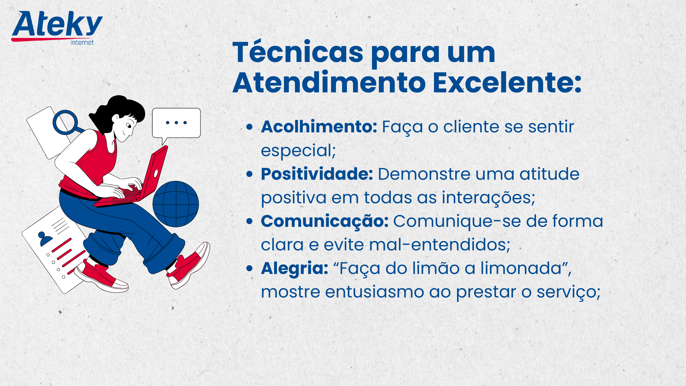
Atendimento ao cliente · Módulo 1
10. O que Evitar no Atendimento
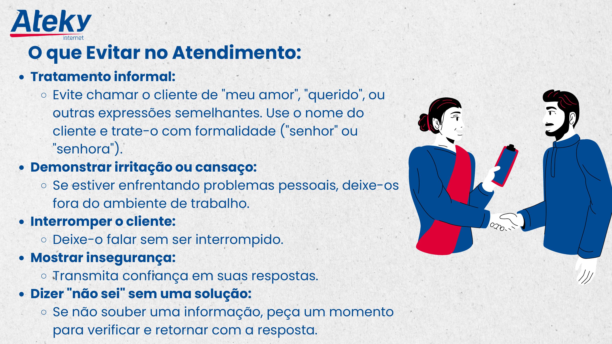
Atendimento ao cliente · Módulo 1
11. Tipos de Clientes: Impaciente
Impaciente: Insistente e, às vezes, sarcástico.
Como lidar: Seja breve e cortês, transmitindo segurança e autocontrole.
Atendimento ao cliente · Módulo 1
12. Tipos de Clientes: Silencioso
Silencioso: Pouco comunicativo, aparenta cansaço.
Como lidar: Induza ao diálogo com perguntas claras e demonstrando atenção.
Atendimento ao cliente · Módulo 1
13. Tipos de Clientes: Agitado
Agitado: Interrompe constantemente e não tem paciência para explicações.
Como lidar: Mantenha a calma e fale de forma clara e objetiva.
Atendimento ao cliente · Módulo 1
14. Tipos de Clientes: De Bom Senso
De Bom Senso: Amável e inteligente.
Como lidar: Demonstre atenção e mantenha um clima de simpatia.
Atendimento ao cliente · Módulo 1
15. Tipos de Clientes: Bem-Humorado
Bem-Humorado: Agradável, mas pode desviar do assunto.
Como lidar: Conduza a conversa com habilidade para mantê-lo no foco.
Atendimento ao cliente · Módulo 1
16. Tipos de Clientes: Inteligente
Inteligente: Conhece bem os assuntos e não tolera argumentos fracos.
Como lidar: Use lógica e bom senso, sendo sempre bem informado.
Atendimento ao cliente · Módulo 1
17. Tipos de Clientes: Detalhista
Detalhista: Exige explicações detalhadas.
Como lidar: Fale pausadamente e com clareza, sem se prender a detalhes desnecessários.
Atendimento ao cliente · Módulo 1
18. Tipos de Clientes: Agressivo
Agressivo: Gosta de discutir e criticar abertamente.
Como lidar: Deixe o cliente desabafar e use frases que acalmam, como "Entendo como se sente" ou "Vamos resolver isso juntos."
Atendimento ao cliente · Módulo 2
19. Atendimento ao cliente · Mód. 2
Atendimento ao cliente · Módulo 2
20. Atenda o mais rápido possível
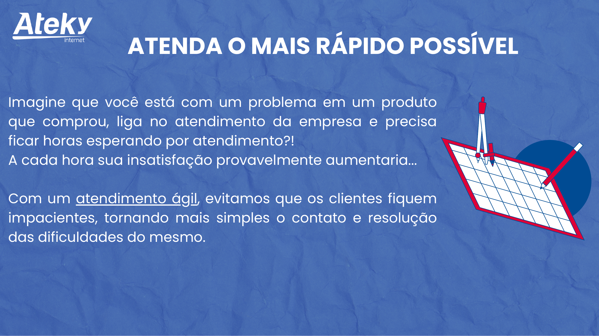
Atendimento ao cliente · Módulo 2
21. Apresente-se
Seu cliente precisa saber com quem está falando!
“Ateky internet, bom dia! Com quem eu falo? Certo XX, meu nome é XX. No que posso lhe ajudar hoje?”
Atendimento ao cliente · Módulo 2
22. Tenha empatia, se coloque no lugar dele
Atendimento ao cliente · Módulo 2
Exemplo de empatia no atendimento (Alessandro)
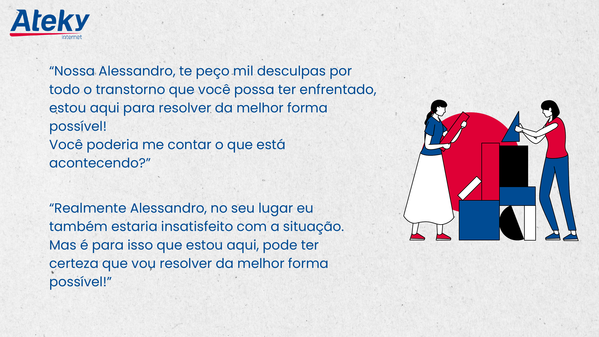
Atendimento ao cliente · Módulo 2
24. Preste atenção no seu tom de voz
O tom de voz pode influenciar a forma como a mensagem é percebida e compreendida pelo cliente.
Falar de forma monótona, por exemplo, pode fazer com que o cliente perca totalmente o interesse no que está sendo dito, já que a tendência não é que as pessoas se esforcem para entender o que está sendo falado, mas sim que se dispersem.
Monótono
Confiante
Expressivo
Atendimento ao cliente · Módulo 2
25. Linguagem apropriada
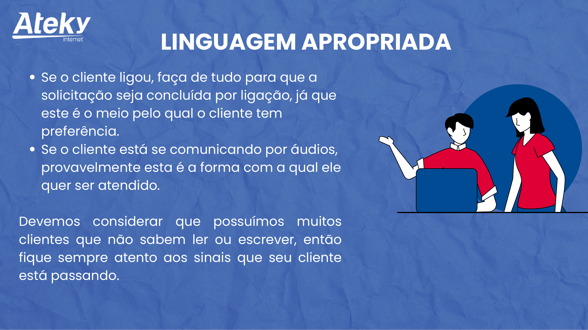
Atendimento ao cliente · Módulo 2
26. Cuide da sua escrita
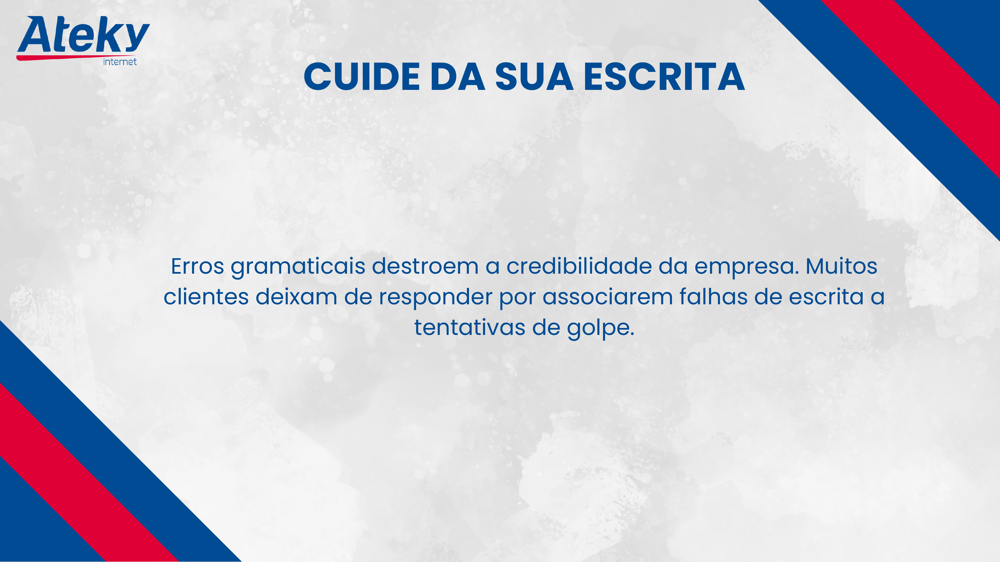
Atendimento ao cliente · Módulo 2
27. Exemplos de escrita no atendimento
Atendimento ao cliente · Módulo 2
28. Cuide da sua escrita: expressões a evitar
Atendimento ao cliente · Módulo 2
30. Avise antes de redirecionar ou colocar em espera
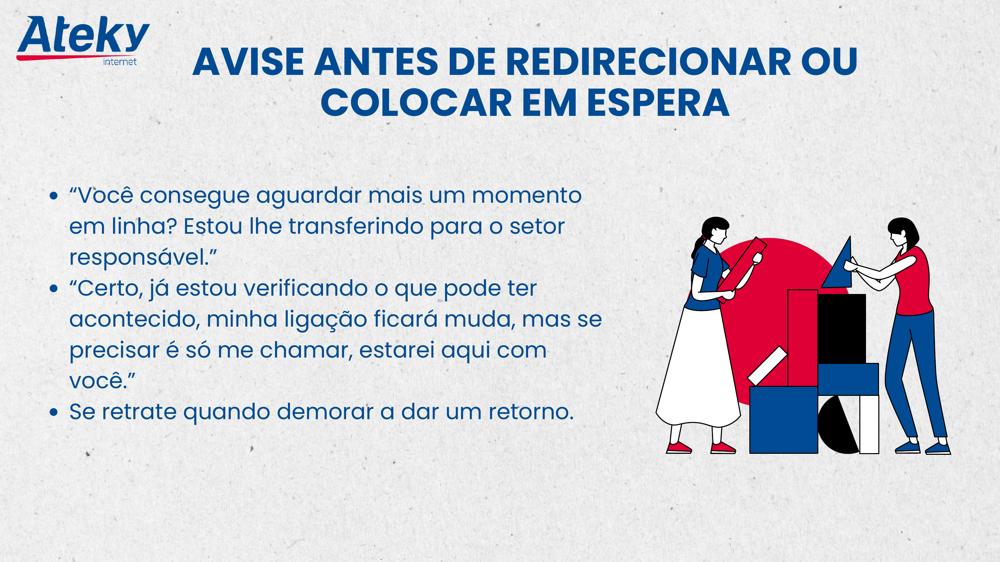
Atendimento ao cliente · Módulo 2
31. Apresentação de Ferramentas Internas
Atendimento ao cliente · Módulo 2
32. Boa jornada!
Boa jornada!
Use as setas ← → ou arraste o slide com o mouse para avançar
Dinâmica de atendimento · pratique em dupla
Escuta ativa em 60 segundos
Uma pessoa faz o papel de cliente frustrado com uma demora. A outra escuta sem interromper, resume a necessidade e propõe um próximo passo. Depois, troquem os papéis.
Conferir os três sinais de uma boa resposta
A pessoa se sentiu ouvida, sem ser interrompida.
A resposta reconheceu a frustração sem discutir ou culpar.
Ficou claro o que será feito e quando haverá retorno.
Desafio final · coloque em prática
Monte uma resposta completa
Uma cliente chamada Ana está frustrada com um problema ainda não resolvido. Escreva (ou ensaie) uma resposta que acolha, esclareça o próximo passo e mantenha a cliente informada caso precise transferir o contato.
Ver um exemplo de estrutura
“Entendo como essa situação é frustrante, Ana. Vou verificar o que aconteceu e buscar a melhor forma de resolver. Para isso, preciso falar com o setor responsável. Você consegue aguardar um momento em linha? Se levar mais tempo, volto para atualizar você.”
Adapte as palavras ao contexto. Só informe prazos ou soluções que tenham sido confirmados.
Módulo 03 · Aprenda para ensinar
Informática Básica
APRENDA PARA ENSINAR · INFORMÁTICA
Entenda o computador para orientar com segurança.
Conheça os componentes básicos, entenda a função de cada um e saiba quando encaminhar uma dúvida técnica.
Vídeo → Conceitos → Prática → Aprendizado
Comece pelo vídeo
Assista ao vídeo “Partes básicas do computador”. Depois, explore cada componente com calma e use a atividade para conferir o que aprendeu.
Informática BásicaPartes básicas do computador · 720p
Hardware e softwareCPU e memória RAMHD e SSDSistema operacional e drivers
Conceitos básicos de computador
Conheça as partes físicas e os programas que trabalham juntos para o computador funcionar.
Hardware
É a parte física — tudo que você pode tocar: teclado, mouse, monitor, placa-mãe, processador, memória RAM, HD, SSD e placa de vídeo.
Software
É a parte lógica: programas e sistemas que não podem ser tocados. Exemplos: Windows, Word, Chrome, antivírus e Spotify.
CPU (processador)
É o “cérebro” do computador. Realiza cálculos e processa instruções. Exemplos de marcas e linhas: Intel Core i5/i7 e AMD Ryzen. A frequência é medida em GHz.
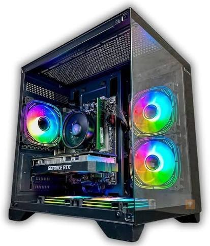
Memória RAM
Memória temporária e volátil, usada enquanto o computador está ligado. Guarda dados dos programas em uso; pouca RAM pode deixar o computador lento ou travado.
SSD (Solid State Drive)
Armazenamento flash sem partes mecânicas. O material cita velocidades de até 7.000 MB/s e até 60 vezes mais rapidez que um HD, conforme o equipamento.
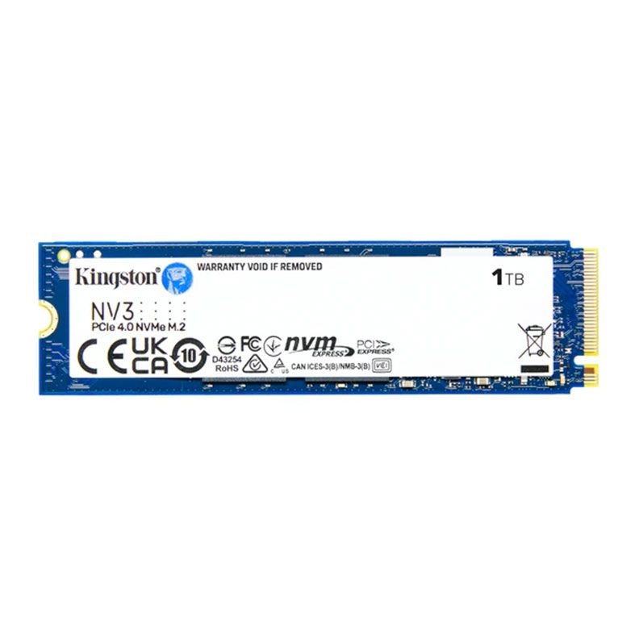
HD (Hard Disk)
Armazenamento permanente mecânico, com disco giratório. O material cita velocidade aproximada de 120 MB/s; é mais barato, porém mais lento e frágil que um SSD.
Sistema operacional
Software que gerencia o hardware e os demais programas e permite usar o computador. Exemplos: Windows 10/11, macOS, Linux, Android e iOS.
Drivers
Softwares que permitem ao sistema operacional comunicar-se com dispositivos de hardware, como impressora, placa de vídeo e rede.
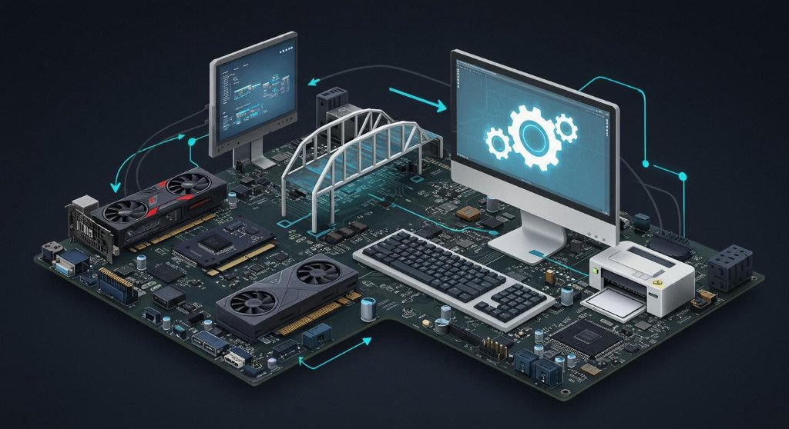
Quando algo não funciona como esperado
Pouca memória RAM
Quando a RAM fica cheia, o sistema pode usar um arquivo de paginação no HD/SSD como memória virtual, que é mais lento. O resultado pode ser travamentos, lentidão ou aviso de memória insuficiente.
O que fazer: feche programas desnecessários; procure a equipe responsável se o problema continuar. O material também sugere verificar os processos no Gerenciador de Tarefas (Ctrl+Shift+Esc).
Driver ausente ou desatualizado
Pode causar dispositivo não reconhecido, falhas de som ou imagem, impressora sem funcionar, Wi-Fi indisponível e outros problemas.
O que fazer: informe o suporte ou a equipe técnica. O material original cita o Gerenciador de Dispositivos (devmgmt.msc) para verificar drivers.
Lembrete: não instale programas ou altere configurações do equipamento corporativo sem seguir as orientações da equipe responsável.